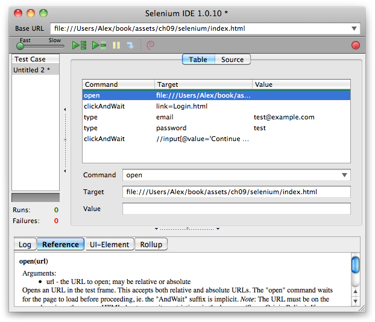
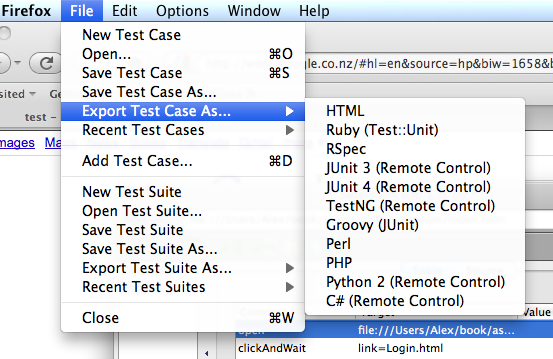

{% include JB/setup %}
{% raw %}
<div>
<div class="book" title="Drivers"><div class="book"><div class="book"><div class="book"><h1 class="title1"><a id="I_sect19_d1e8569" class="calibre1"></a>Drivers</h1></div></div></div><p class="calibre3"><a id="I_indexterm9_d1e8573" class="calibre1"></a><a id="I_indexterm9_d1e8578" class="calibre1"></a>Although by using a testing library we now have a degree of
    automation, there’s still the problem of running your tests in lots of
    different browsers. It’s not exactly productive having developers refresh
    the tests in five different browsers before every commit. Drivers were
    developed to solve exactly this problem. They’re daemons that integrate
    with various browsers, running your JavaScript tests automatically and
    notifying you when they fail.</p><p class="calibre3">It can be quite a lot of work implementing a driver setup on every
    developer’s machine, so most companies have a single continuous
    integration server, which will use a post-commit hook to run all the
    JavaScript tests automatically, making sure they all pass
    successfully.</p><p class="calibre3"><a class="ulink" href="http://watir.com">Watir</a><a id="I_indexterm9_d1e8587" class="calibre1"></a>, pronounced “water,” is a Ruby driver library that
    integrates with Crome, Firefox, Safari, and Internet Explorer (dependent
    on the platform). After installation, you can give Watir some Ruby
    commands to drive the browser, clicking links and filling in forms the
    same as a person would. During this process, you can run a few test cases
    and assert that things are working as expected:</p><pre class="screen"># FireWatir drives Firefox
require "firewatir"

browser = Watir::Browser.new
browser.goto("http://bit.ly/watir-example")

browser.text_field(:name =&gt; "entry.0.single").set "Watir"
browser.button(:name =&gt; "logon").click</pre><p class="calibre3">Due to limitations on which browsers can be installed on which
    operating systems, if you’re testing with Internet Explorer, your
    continuous integration server will have to run a version of Windows.
    Likewise, to test in Safari, you’ll also need a server running Mac OS
    X.</p><p class="calibre3">Another very popular browser-driving tool is <a class="ulink" href="http://seleniumhq.org">Selenium</a><a id="I_indexterm9_d1e8599" class="calibre1"></a>. The library <a id="I_indexterm9_d1e8603" class="calibre1"></a>provides a domain scripting language (DSL) to write tests in
    a number of programming languages, such as C#, Java, Groovy, Perl, PHP,
    Python, and Ruby. Selenium can run locally; typically, it runs in the
    background on a continuous integration server, keeping out of your way as
    you commit code, but notifying you when tests fail. Selenium’s strengths
    lie in the number of languages it supports, as well as the <a class="ulink" href="http://seleniumhq.org/projects/ide">Selenium IDE</a>, a Firefox
    <a id="I_indexterm9_d1e8612" class="calibre1"></a>plug-in <a id="I_indexterm9_d1e8618" class="calibre1"></a>that records and plays back actions inside the browser,
    greatly simplifying authoring tests.</p><div class="figure"><a id="fig_9_4" class="calibre1"></a><div class="book"><div class="book"><a id="I_mediaobject9_d1e8627" class="calibre1"></a></div></div><p class="title4">Figure 9-4. Recording instructions with Selenium</p></div><p class="calibre3">In <a class="ulink" href="ch09s02.html#fig_9_4" title="Figure 9-4. Recording instructions with Selenium">Figure 9-4</a>, we’re using the Selenium IDE tool to
    record clicking on a link, filling in a form, and finally submitting it.
    Once a session has been recorded, you can play it back using the green
    <span class="calibre1"><em class="calibre4">play</em></span> button. The tool will emulate our recorded
    actions, navigating to and completing the test form.</p><p class="calibre3">We can then export the recorded Test Case to a variety of formats,
    as shown in <a class="ulink" href="ch09s02.html#fig_9_5" title="Figure 9-5. Exporting Selenium test cases to various formats">Figure 9-5</a>.</p><p class="calibre3">For example, here’s the exported Test Case as a Ruby Test::Unit
    case. As you can see, Selenium’s IDE has conveniently generated all the
    relevant driver methods, greatly reducing the amount of work needed to
    test the page:</p><pre class="screen">class SeleniumTest &lt; Test::Unit::TestCase
  def setup
    @selenium = Selenium::Client::Driver.new \
      :host =&gt; "localhost",
      :port =&gt; 4444,
      :browser =&gt; "*chrome",
      :url =&gt; "http://example.com/index.html",
      :timeout_in_second =&gt; 60

    @selenium.start_new_browser_session
  end

  def test_selenium
    @selenium.open "http://example.com/index.html"
    @selenium.click "link=Login.html"
    @selenium.wait_for_page_to_load "30000"
    @selenium.type "email", "test@example.com"
    @selenium.type "password", "test"
    @selenium.click "//input[@value='Continue →']"
    @selenium.wait_for_page_to_load "30000"
  end
end</pre><div class="book"><div class="figure"><a id="fig_9_5" class="calibre1"></a><div class="book"><div class="book"><a id="I_mediaobject9_d1e8651" class="calibre1"></a></div></div><p class="title4">Figure 9-5. Exporting Selenium test cases to various formats</p></div></div><p class="calibre3">We can now make assertions on the <code class="literal">@selenium</code> object, such as ensuring that a
    particular bit of text is present:</p><pre class="screen">def test_selenium
  # ...
  assert @selenium.is_text_present("elvis")
end</pre><p class="calibre3">For more information about Selenium, visit the website and watch the
    <a class="ulink" href="http://seleniumhq.org/movies/intro.mov">introduction
    screencast</a>.</p></div></div>

{% endraw %}

